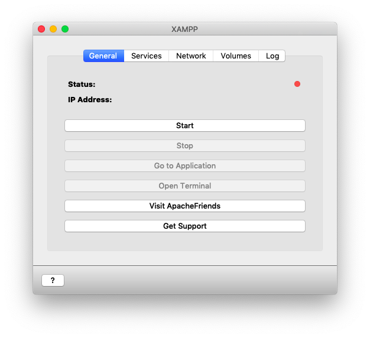
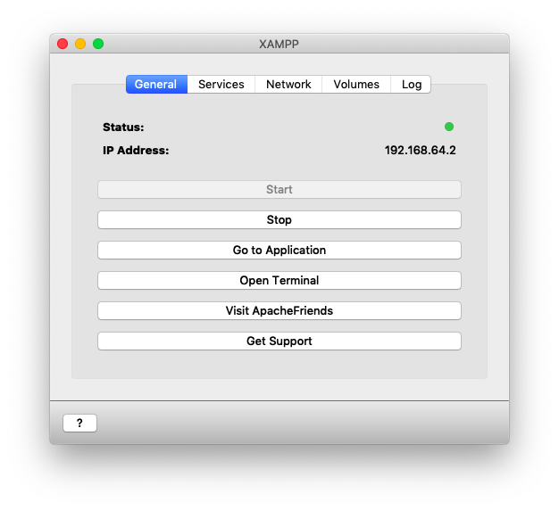
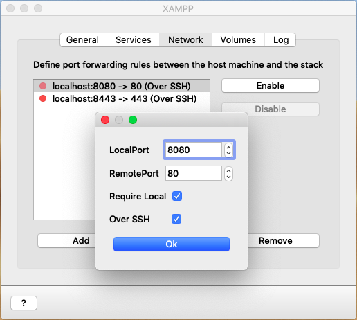
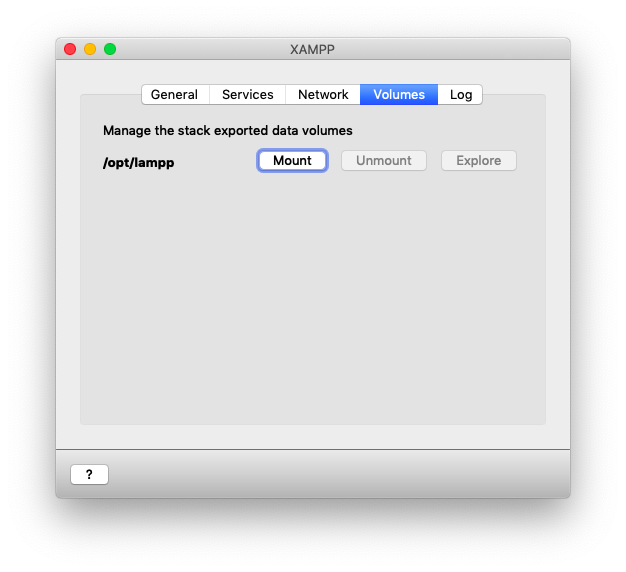

使用 XAMPP 建立伺服器
在 Win/Mac 上要建立伺服器開發環境，有許多 AMP (Apache, MySQL/MariaDB, PHP) 軟體，課程以 XAMPP 為例。
什麼是 XAMPP？與為什麼選擇 XAMPP？
借用官網的說明：
- XAMPP 是最流行的 PHP 開發環境
- XAMPP 是完全免費且易於安裝的 Apache 發行版本，其中包含 MariaDB、PHP 和 Perl。XAMPP 開放源碼套件的設置讓安裝和使用出奇容易。
其中的 X 代表是跨平台，這也是選擇它的一個原因。
在 Windows 系統使用
有安裝版或與 Portable 版本 (一般稱為免安裝版本)
在 Mac 系統使用
在 Mac 系統有安裝版，新的選擇 XAMPP-VM (虛擬機器)
使用方式以 Mac XAMPP-VM 為例與資料夾結構
官網下載與安裝
執行 Xampp 後按下 Start，

待轉為綠色圖示時即可於瀏覽器輸入顯示的網址，或按「Go to Application」

設定服務對應到本地端
如果要讓區域網路的夥伴查看，需要取消勾選「Require Local」該項。

載掛 Xampp 資料夾
不論作業系統與版本，網頁的進入資料夾是 htdocs。相關原始檔都放在這裡，例如：html, js, css, php, jpg...等。
